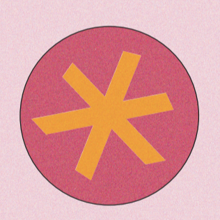
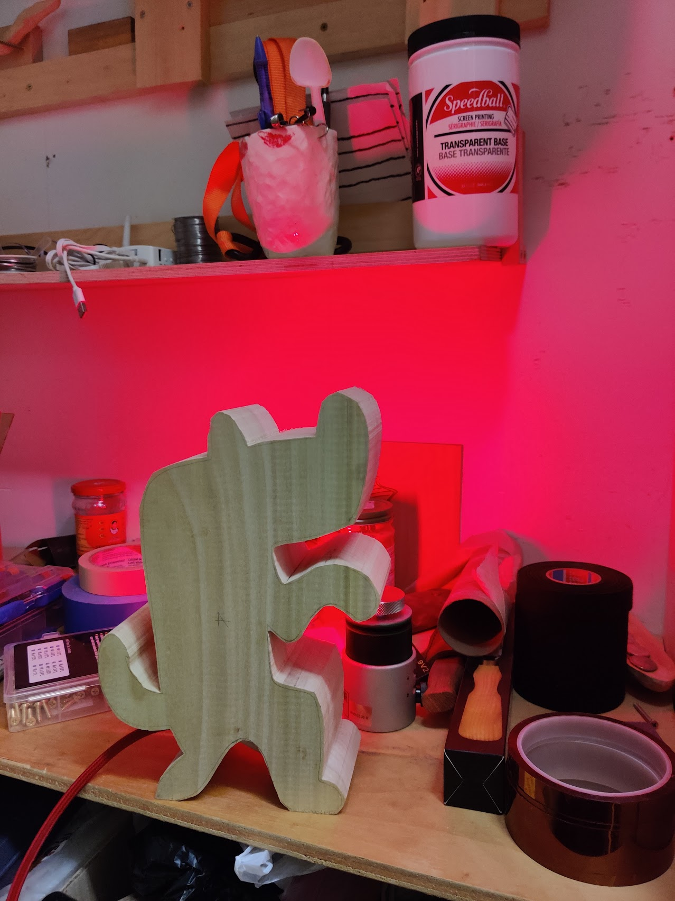

<!-- 
sets out a module for a reusable gallery with generic image containers that
    a) when clicked, show the user only that image in better detail
    b) keep the image in bounds of the gallery display size
    c) hide all the other images

-->


<script>

    // function to toggle images between gallery and fullscreen
    gallerize = (imgboxes,i) => {
        clickedbox = imgboxes[i]
        gallery = document.querySelector(".gallery")
        wrapper = document.querySelector(".wrapper")

        // hide all 
        imgboxes.forEach((box,k)=>{
          console.log("making vis", k)
          box.style.visibility = "hidden"
        });   

        // clone node and append children
        maxbox = clickedbox.cloneNode()
        clickedbox.childNodes.forEach(child=>{
            newchild = child.cloneNode()
            maxbox.appendChild(newchild)
        })
        
        // add an onclick listener to delete itself and show everything else
        maxbox.addEventListener("click",()=>{
            // show all imgs
            imgboxes.forEach((box,k)=>{
                console.log("making vis", k)
                box.style.visibility = "visible"
            });   
            maxbox.remove()
        })
        
        // style and add class to have css pick up
        maxbox.style.visibility = "visible"
        maxbox.classList.add("max")
        maxbox.classList.remove("photo")
        
        wrapper.insertBefore(maxbox,gallery)
    
    
     }

     //  main logic
  window.onload = ()=>{
    let imgboxes = document.querySelectorAll(".photo")
    
    imgboxes.forEach((box, i) => {
      // add a click listener to each
      box.addEventListener("click", ()=>{gallerize(imgboxes,i)});
      // assume they are in min state and add a class to save state
    //   box.classList.add("min")
    });
  }
</script>

<style>
    /* style for gallery logic */

    .max{
        position: absolute;
        top: 50%;
        left: 50%;
        transform: translate(-50%,-50%);
       
        background-color: blueviolet;
       
        height: 95vh;
        width: 95vw;
        display: flex;
        justify-content: center;

    }

    /* styles */

    img{
        object-fit: cover;
        max-width:100%;
        max-height:100%;

    }
    .wrapper{
        background-color: green;
    }

    .gallery{
        display: grid;
        justify-items: center;
        padding-top: 100px;
        padding-bottom: 100px;
        padding-left: 50px;
        padding-right: 50px;
    }

    .photo{
        display: flex;
        background-color: blue;
        justify-content: center;
        

    }

    @media(min-width: 1000px){ 
        .gallery{
            grid-template-columns: repeat(auto-fill, minmax(200px, 1fr));
            grid-auto-rows: 300px;
            row-gap: 2vh;
            column-gap: 2vw;

        }

        .photo{
            width: 200px;
            height: 250px;
        } 
    }

    @media(max-width: 1000px){ 
        .gallery{
            grid-template-columns: repeat(2, minmax(50px,1fr));
            grid-auto-rows: none;
            row-gap: 5vh;
            column-gap: 5vw;
        }

        .photo{
            width: 30vw;
            height: 40vw;
        } 
    }
    
   
    


</style>

<head>

</head>

<body>

    <div class="wrapper">
        <div class="gallery">
                <div class="photo">
                    <!-- </img> -->
                </div>
                <div class="photo">
                    <!-- </img> -->
                </div>
                <div class="photo"></div>
                <div class="photo"></div>
                <div class="photo"></div>
                <div class="photo"></div>
                <div class="photo"></div>
                <div class="photo"></div>
                <div class="photo"></div>
                <div class="photo"></div>
               
        </div>

    </div>
    
    
</body>